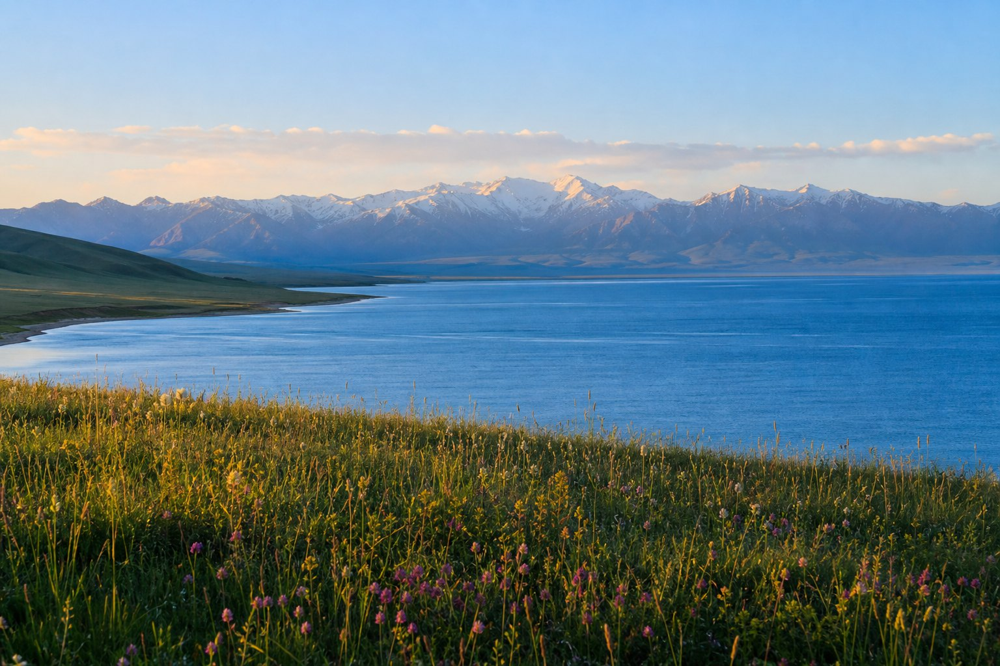
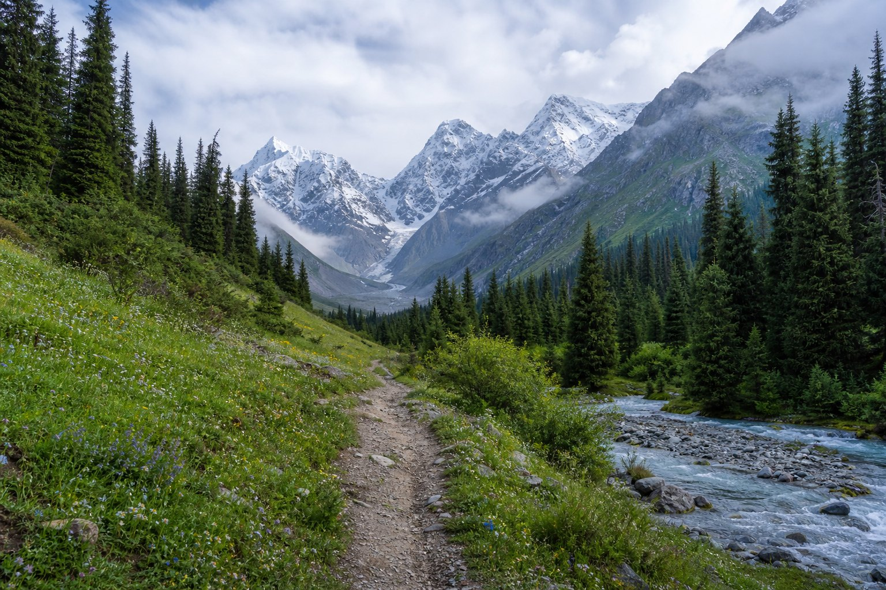
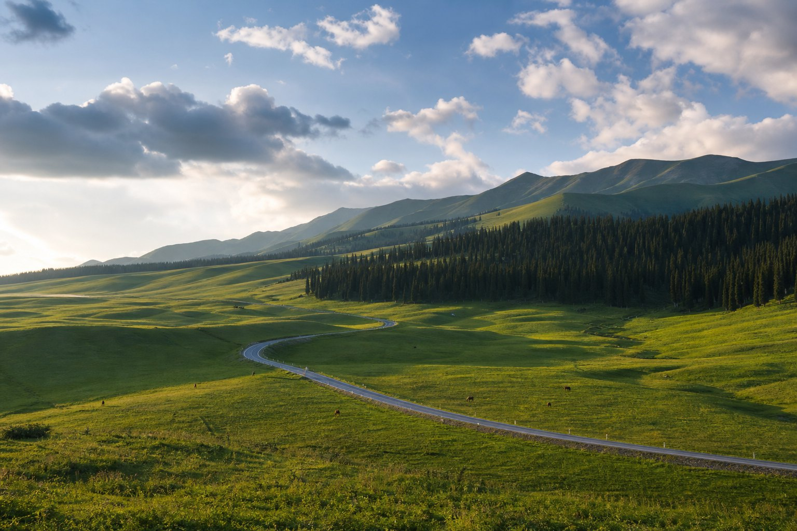

山地麦田
01
最佳方式乌鲁木齐进 · 伊宁出
02
行程日期8 月 6–15 日 · 10 天
03
核心体验湖泊 · 雪山 · 草原 · 村落
THE ROUTE
一条线，读懂伊犁的层次
8 月 6 日从乌鲁木齐向东到奇台，7 日上午游江布拉克后横穿北疆向西，8 月 15 日从伊宁返程。十天依次经过麦田、湖泊、雪山、草原与村落。
8 月 6–15 日 · 10 DAYS乌鲁木齐 → 伊宁前两日先向东到奇台与江布拉克，再横穿北疆向西进入伊犁；点击具体日期可查看当天轨迹。8 月 6 日 · 周四下午 · 向东转场乌鲁木齐 → 奇台抵达后直接前往奇台，晚上在县城休息，为次日上午江布拉克留出时间。8 月 7 日 · 上午江布拉克 · 超长转场奇台 → 江布拉克 → 赛里木湖上午游览江布拉克后开始向西长途转场；精简景区停留并尽早离园。8 月 8 日 · 湖泊 → 河谷城市赛里木湖 → 伊宁沿果子沟进入伊犁河谷，下午切换到伊宁城市慢游。8 月 9 日 · 伊昭公路 · 景观驾驶伊宁 → 昭苏沿伊昭公路向南，森林、草甸与雪山一路展开。8 月 10 日 · 雪山脚下 · 深度慢游昭苏 → 夏塔短距离进入夏塔景区，把主要时间留给古道与雪山。8 月 11 日 · 八卦城 · 立体草原夏塔 → 特克斯 → 喀拉峻经特克斯补给后进入喀拉峻，连续切换人文与草原。8 月 12 日 · 草原 → 原生态村落喀拉峻 → 琼库什台向南进入山谷村落，路程不长但山路需要放慢速度。8 月 13 日 · 村落 → 空中草原琼库什台 → 那拉提上午离开琼库什台，抵达那拉提后只选一条主线，集中完成草原段。8 月 14 日 · 返程缓冲 · 降低强度那拉提 → 伊宁返回伊宁休整，为次日航班、行李整理和临时变化留足余量。8 月 15 日 · 周六返程 · 伊宁机场伊宁机场返程当天只保留市区到机场的短途移动；北京 15:10 与西安 16:00 的航班最适合同步前往机场。
点击切换当天轨迹
- 01乌鲁木齐
- 02奇台
- 03江布拉克
- 04赛里木湖
- 05伊宁
- 06昭苏
- 07夏塔
- 08特克斯
- 09喀拉峻
- 10琼库什台
- 11那拉提
- 12伊宁
边界数据：geoBoundaries · CHN ADM1路线节点按目的地经纬度近似定位，连线表示行程顺序，并非导航道路。
高山湖泊
赛里木湖
雪山草原
昭苏 · 夏塔
立体草原
喀拉峻 · 那拉提
原生态村落
琼库什台
SCENES ALONG THE WAY
把三段风景，先放进行程里
以下为根据目的地景观生成的行程意境图，并非现场实时照片；用于帮助理解每天的风景层次与准备重点。

赛里木湖 · 把光线留给清晨
高山湖面的蓝与草甸晨光，是长途抵达后的第一份回报。

夏塔 · 沿森林走向雪山
雨衣、保暖层和水放进随身包，天气不好就及时缩短路线。

那拉提 · 一天只走一条主线
压缩天数但不追求多线打卡，把时间留给草原层次、光影和途中停留。
DAY BY DAY
十天，重点不打折的深度行程
保留夏塔完整一天，把那拉提压缩为单线游览，并在起飞前一晚回到伊宁。
DAY 0
00周四下午向东转场
乌鲁木齐 → 奇台
抵达乌鲁木齐后直接前往奇台，晚上住奇台县城，把周五上午完整留给江布拉克。
沿途重点
- 机场或集合点完成两车会合
- 沿高速向东前往奇台
- 抵达后晚餐、补水并尽早休息
风味奇台过油肉拌面、黄面、架子肉
不再安排乌鲁木齐市内景点，以顺利抵达奇台为当天目标。
DAY 1
01麦田之后，一路向西
江布拉克 → 赛里木湖
周五上午游江布拉克，午前后离园后开始本程最长的向西转场；当天优先保证行车安全和休息。
沿途重点
- 江布拉克：天山麦海、天山怪坡
- 按约定时间离园并完成油电补给
- 长途向西前往赛里木湖
- 抵达较晚时直接入住，湖景留给次日清晨
风味高白鲑、烤羊肉、奶制品
这是明显的超长转场。住宿优先选方便入住的位置；不以赶上日落为目标，疲惫时及时调整落脚点。
DAY 2
02新疆烟火城市
赛里木湖 → 伊宁
从高山湖泊切换到伊犁河谷的生活气息，下午适合慢慢散步。
沿途重点
- 六星街：街区漫步与拍照
- 喀赞其：民俗街区体验
- 伊犁河：傍晚休闲
风味手抓饭、烤包子、馕坑肉、冰淇淋
DAY 3
03穿越伊昭公路
伊宁 → 昭苏
沿途是森林、高山草甸与雪山。把行程本身当成风景，不必急着赶路。
沿途重点
- 伊昭公路
- 高山草甸
- 雪山观景带
建议慢开，多留安全的停车拍照时间。
DAY 4
04雪山脚下的草原秘境
夏塔全天
天气决定当天景色，建议完整预留一天，给徒步和临时变化留出弹性。
沿途重点
- 夏塔古道
- 木扎尔特冰川
- 森林与草甸
DAY 5
05八卦城与立体草原
特克斯 + 喀拉峻
在特克斯短暂停留感受城市特色，再前往视野层次丰富的喀拉峻。
沿途重点
- 特克斯八卦城
- 立体草原
- 雪山背景与摄影机位
DAY 6
06原生态村落
琼库什台
木屋、河谷、森林与雪山构成安静的村落体验，适合把节奏真正放下来。
沿途重点
- 木屋村落
- 河谷漫步
- 森林与雪山
住宿条件相对朴素，但体验独特。
DAY 7
07转场后专注一条主线
那拉提草原
上午从琼库什台出发，抵达后推荐优先空中草原；不为打卡多条线路压缩安全车程。
沿途重点
- 琼库什台准时出发
- 空中草原主线
- 根据抵达时间主动缩短
DAY 8
08返程缓冲日
那拉提 → 伊宁
降低驾驶强度，提前一晚回到伊宁，为次日两组航班和可能的临时变化留出余量。
沿途重点
- 白天返回伊宁
- 整理行李与订单
- 晚间补水并尽早休息
DAY 9
09周六从伊犁从容离开
伊宁机场返程
今天不再增加景点。北京推荐 CZ5438 15:10，西安推荐 9C6462 16:00，两组可一起前往机场。
沿途重点
- 13:00 前抵达伊宁机场
- 北京组 15:10 起飞
- 西安组 16:00 起飞
WEATHER WATCH · 8/6—8/15
沿着行程，看气温与天气风险
把预报直接对齐每天的目的地。城市与高山湖泊温差明显，8 月 8—12 日山区多雨，返程两日还要注意伊宁高温。
本次行程重点
连续降雨，比单日高温更值得盯紧
8/8—12伊宁 → 昭苏 → 夏塔 → 琼库什台伊昭公路与夏塔防湿滑、低云和落石
每天发车前同时核对天气、交通和景区公告；预警升级或管控时不绕行小路。
8 月 15 日伊宁晴转阴，最高约 36°C
不增加市区景点，13:00 前抵达机场，并在前一晚再次确认航班状态。
赛里木湖低至 10°C，伊宁最高约 36°C
每天仍按短袖、保暖层、防风防雨外层三层准备，不凭城市温度删减衣物。
奇台
阴
33°/ 22°C
周四下午由乌鲁木齐向东转场，奇台县城仍偏热；落地后先补水，途中在正规服务区短休。
查看官方预报 ↗江布拉克
小雨转多云
23°/ 13°C
清晨体感偏凉，路面可能湿滑；雨衣和薄保暖层随身带，核心景观游完后按约定时间离园。
查看官方预报 ↗赛里木湖
多云转阴
20°/ 10°C
长途抵达后湖边气温低、风感强；抓绒和冲锋衣放在顺手位置，不把当晚日落作为必须完成项。
查看官方预报 ↗伊宁
小雨
32°/ 19°C
赛里木湖返程可能遇湿滑路面，果子沟长下坡控制车速，到伊宁后及时补齐雨具。
查看官方预报 ↗昭苏 · 夏塔
中雨转小雨 / 小雨转雨
27°/ 12°C
伊昭公路和夏塔均需防低云、落石与湿滑；若雪山完全不可见，优先缩短徒步而非硬等。
查看官方预报 ↗特克斯 · 琼库什台
11 日多云，12 日有雨
30°/ 15°C
12 日降雨信号更明确。进村前完成加油和补给，天黑前抵达，雨后不在临坡临沟位置久停。
查看官方预报 ↗那拉提 · 新源
阴
34°/ 19°C
从琼库什台转场后只选一条主线，避免在换乘和排队中消耗时间；仍保留雨衣和保暖层。
查看官方预报 ↗伊宁 · 返程
多云转晴后转阴
37°/ 21°C
14 日回伊宁后补水、整理行李；15 日不安排户外景点，统一按 13:00 前抵达机场准备值机。
查看官方预报 ↗OFFICIAL ALERTS · 官方生效预警
预报风险不等同于已经发布的预警此处为 2026 年 8 月 4 日查询到的行程预报快照。山区天气变化快，请在每天出发前用官方页面再次核对生效预警；8—15 天趋势预报的不确定性也会更高。
打开新疆官方预警页 ↗FLIGHT OPTIONS · 8/15
从伊宁返程，先看这几班
按 2026 年 8 月 15 日（周六）的现行航季计划核对。北京可直飞；汉中方向建议落地西安咸阳后转高铁或汽车。
RECOMMENDED · 同步去机场
北京 15:10 / 西安 16:00
CZ5438 + 9C6462 两班仅相差 50 分钟。8 月 14 日住伊宁，15 日建议两组统一在 13:00 前抵达机场，衔接最从容。
北京方向 · 直飞
伊宁 → 北京
8 月 15 日为周六。优先推荐 15:10 的 CZ5438，与西安方向 16:00 的航班仅相差 50 分钟。CZ8893南方航空
北京大兴 PKX
CZ5438南方航空
北京大兴 PKX
CA1256中国国航
北京首都 PEK
汉中方向 · 推荐落地西安
伊宁 → 西安 → 汉中
伊宁目前没有直飞汉中城固机场的班次。8 月 15 日可乘每日执飞的 9C6462 到西安，再转高铁或汽车前往汉中。9C6462春秋航空
西安咸阳 XIY
航班计划可能调整，以上为 2026 年 8 月 5 日核对到的 8 月 15 日航季时刻；购票、值机截止时间和出发前动态请以航空公司或订单页面为准。
BEFORE YOU GO
出发前，把安全装进行李
新疆自驾的距离长、温差大、部分路段补给稀疏。下面这份清单建议在出发前一晚和每天发车前各检查一次。
DAILY CHECK · 每天发车前
四件小事，决定一天是否从容
- 01看天气山区降雨与温度
- 02看路况封路与景区公告
- 03补油电不等见底再补给
- 04定集合停车点与失联方案
FOR THIS TRIP · 8/6—8/15
按我们的行程准备
不是泛用清单，而是把每个关键日期、路段和要提前做的事放在一起。出发前可以按时间顺序逐项划掉。
DAY 0
乌鲁木齐 → 奇台 · 下午转场
落地后不在乌鲁木齐停留，直接向东到奇台- 两车各保存奇台住宿地址和次日景区入口位置
- 途中在正规服务区短休，抵达奇台后先吃饭、补水并尽早休息
- 睡前约定江布拉克集合时间、离园时间与失联会合点
DAY 1
奇台 → 江布拉克 → 赛里木湖
上午江布拉克之后是超长转场，离园时间必须明确- 江布拉克只走核心景观，轻装游览并按约定时间集合
- 离开奇台区域前补足油电、水和一顿车上简餐
- 若离园过晚或人员疲惫，不为赶到湖边强行夜驾；抓绒、冲锋衣单独装成抵达包
DAY 2
赛里木湖 → 伊宁
利用城市夜，把后半程重新补满- 清晨看湖后再出发，避免全天都在赶点
- 到伊宁补水、洗衣并整理车内垃圾
- 睡前核对伊昭公路天气与次日交通公告
DAY 3
伊宁 → 昭苏 · 伊昭公路
出发当天再确认 S237 通行状态- 2026 年已恢复通车，但山区天气仍可能触发临时管控
- 白石峰弯坡路段减速，不在弯道或临崖处停车
- 若遇管制，按交警指引绕行，不自行寻找小路
DAY 4
夏塔 · 全天慢游
把返程时间先写进闹钟，再开始徒步- 轻装带雨衣、保暖层、防滑鞋和充电宝
- 每人随身带水与能量食品，不把补给全留车上
- 天气转差或雪山不可见时及时缩短路线
DAY 5–6
特克斯 → 喀拉峻 → 琼库什台
在特克斯完成山村段最后一次集中补给- 加油、取现并补齐水和零食后再进山
- 下载琼库什台离线地图，准备一只轻便过夜包
- 山路慢行，尽量在天黑前抵达村落住宿
DAY 7
琼库什台 → 那拉提
压缩为一天后只选一条主线，避免把时间耗在换线- 若计划自驾入园，提前在“智游那拉提”实名预约
- 2026 年自驾名额每日限量，不依赖现场临时购票
- 早上准时离开琼库什台；抵达较晚时主动缩短草原线路
DAY 8–9
那拉提 → 伊宁 · 返程
14 日回伊宁缓冲，15 日两组乘客尽量同步去机场- 8 月 14 日回伊宁后整理行李并核对航班订单
- 证件、充电器和贵重物品放进随身包
- 北京 CZ5438 15:10 与西安 9C6462 16:00 最适合同步送机；建议 13:00 前抵达机场
PACKING LIST
建议带什么
按六个类别装包，出门前逐项确认。两辆车的饮水、药品、充电设备和关键地址要分开放置，不要全部集中在一辆车。
证件与预订
放在随身包，不要留在后备箱深处
- 身份证、驾驶证、行驶证
- 车辆保险信息与道路救援电话
- 酒店、门票和航班订单截图
- 少量现金与一张备用银行卡
分层衣物
山口与清晨可能比城市低十几度
- 速干短袖和长裤
- 抓绒或薄羽绒、冲锋衣
- 防滑运动鞋或徒步鞋
- 雨衣、备用袜和替换内衣
防晒与防护
高海拔紫外线强，阴天也需要防晒
- SPF 50+ 防晒霜和润唇膏
- 太阳镜、宽檐帽、防晒面罩
- 保湿用品和驱蚊用品
- 折叠伞或轻便雨披
健康药品
处方药按完整行程再多备两天
- 个人常用药与处方药
- 肠胃、感冒、止痛、晕车药
- 创可贴、碘伏棉签、纱布
- 电解质冲剂和葡萄糖
两车协同
关键物品分开放，避免都集中在同一辆车
- 两车各备饮水、常用药和充电设备
- 对讲机或群聊实时位置共享
- 纸质住宿地址和紧急联系人
- 每天约定集合点与最晚等待时间
电子与补给
无人区和山谷可能信号不稳定
- 车载充电器、充电宝、数据线
- 提前下载新疆离线地图
- 手电或头灯、保温杯
- 饮用水、能量食品和水果
ON THE ROAD
路上注意什么
遇到天气、封路、身体不适或车辆报警时，优先保证人和车安全，行程随时可以缩短。
每天确认路况
出发前查看交管和景区公告。伊昭公路、独库公路遇降雨、落石或临时管制时，不要绕过路障。
拒绝疲劳夜驾
连续驾驶约两小时就休息。山路不抢行、不压弯、不在盲弯停车拍照，天黑前尽量抵达住宿地。
油量过半就补
偏远路段加油站间距较大。燃油车尽量保留 100–150 公里续航，新能源车不要把单一充电站当作唯一方案。
留意高海拔反应
到达山口后慢走、多补水、少饮酒。若持续头痛、恶心、胸闷或呼吸困难，应停止活动并尽快下降海拔。
两车不追赶
前车错过路口时，后车按导航安全行驶，不急刹、不倒车、不强行追赶；到约定的安全停车点再重新会合。
尊重草原与村落
不驶离硬化道路碾压草场，不追逐牲畜，不遗留垃圾；无人机飞行前先确认当地、景区和空域要求。
PLAN B
独库公路备用闭环
那拉提 → 巴音布鲁克 → 独库公路 → 乌鲁木齐
- 道路关闭时原路返回伊宁，不尝试穿越管制路段
- 临时返程优先选择伊宁机场，并预留重新会合与进机场时间
应急电话110 报警 · 120 急救 · 122 交通事故
发生险情先撤到安全位置，开启双闪并摆放三角警示牌，再联系救援。
安全信息参考：中国政府网常用应急号码·CDC 高海拔旅行提示
没有任何一个景点值得冒险赶路。
少赶一个景点，多留一小时给天气和自己。